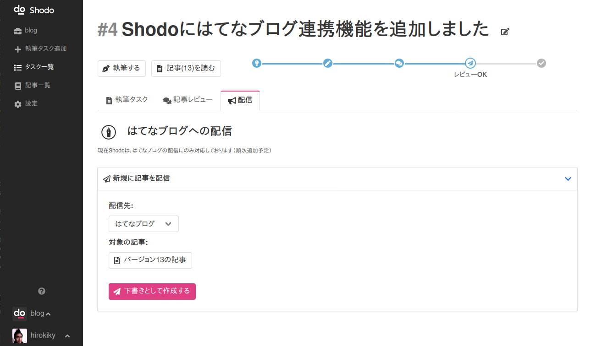

外部サイトへの配信・連携を設定する¶
現在Shodoは、はてなブログへの連携にのみ対応しております 。 その他のサイトへの連携は今後対応される予定です。
はてなブログとの連携を設定する¶
Shodoで執筆・レビューした記事をはてなブログに投稿できます。 Shodoではプロジェクトごとに、はてなブログで作成されたブログを登録し、執筆タスクごとに記事を作成できます。
はてな連携の注意点¶
以下、連携の設定は、はてなブログのオーナーのみ可能です。
ShodoではShodo内のメンバーが後述するAPIキーをプロジェクト内で共有することで記事の投稿を行います。 投稿される記事は、はてなブログのオーナーアカウントが投稿したことになります。
APIキーはShodoのメンバー内では公開されませんが、プロジェクトの「ライター」権限をもつアカウントが記事を投稿できるようになりますのでご注意ください。
OAuthを利用した認証では、はてなの「ブログメンバー」がAtomPub API経由で記事の投稿が行えない仕様のため、Shodoではこの連携方法を採用しております。
はてなブログからAtomPubのURLを取得する¶
はてなブログのダッシュボードを開いてください。
はてなのダッシュボードを開く：https://blog.hatena.ne.jp/

画面左の「設定」を開いて、「詳細設定」にアクセスしてください。

画面下部にスクロールして、AtomPubの設定を見つけます。 AtomPubから「ルートエンドポイント」に書かれたURLと、「APIキー」をメモしておいてください。

たとえば https://blog.hatena.ne.jp/hirokiky/hirokiky.hatenablog.jp/atom のようなURLがエンドポイントのURLになります。
Shodoの設定画面にペーストする¶
Shodoの執筆アプリからプロジェクトを選び、サイドバーから「設定」、「配信」をクリックしてください。

ブログの名前と、コピーした「ルートエンドポイント」のURLと「APIキー」を入力してください。 「ブログ名」には任意の名前を入力できます（Shodo内でのみ表示される値です）。
入力できればボタンをクリックすれば設定は完了です。
APIキーの値はShodo内の他メンバーには表示されません。
Shodoから記事を配信する¶
Shodoの執筆タスクから「配信」をクリックして執筆した記事の配信ができます。 はてなブログには下書きで記事が作成されるので、公開されてしまう心配はありません。

記事の配信はライター以上のアカウントで可能です。